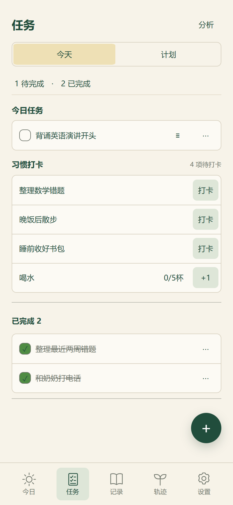
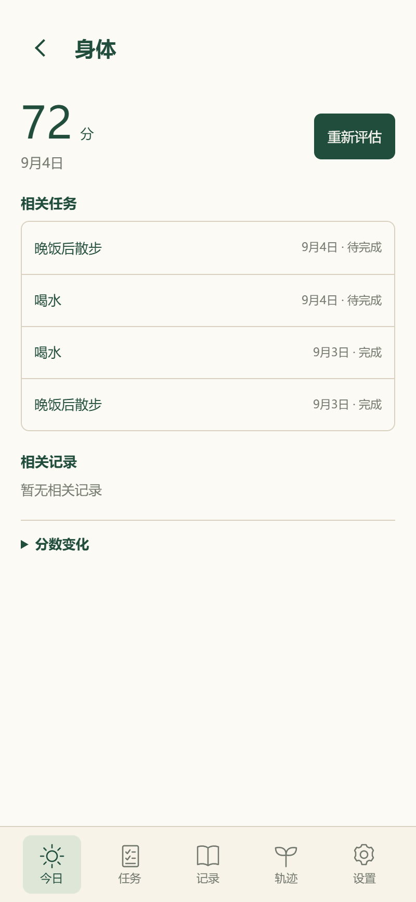
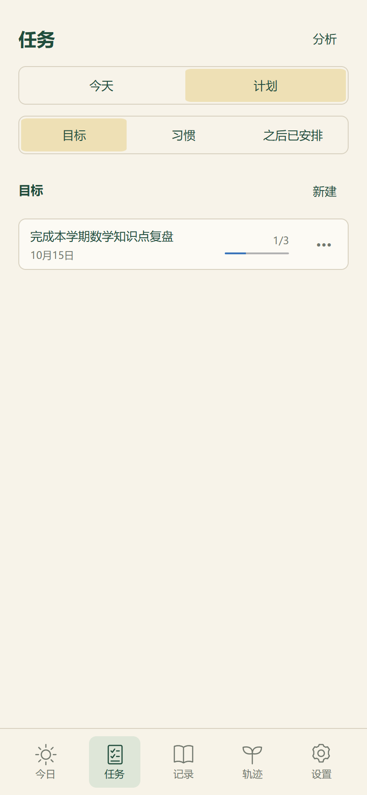
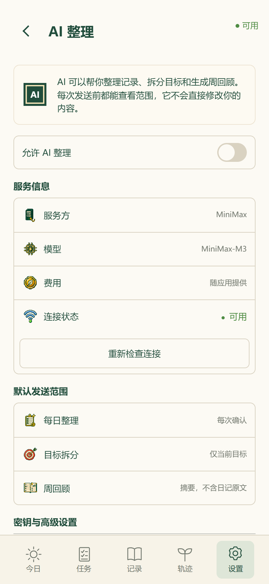
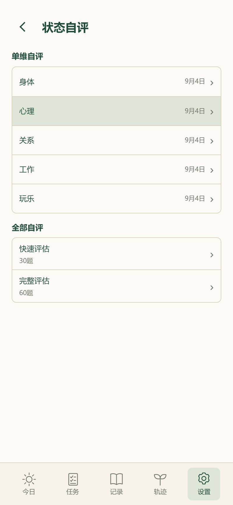
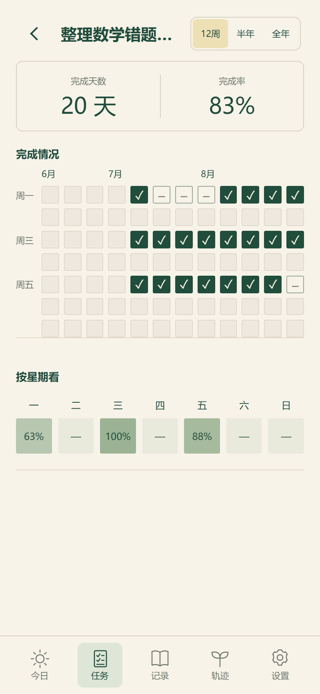
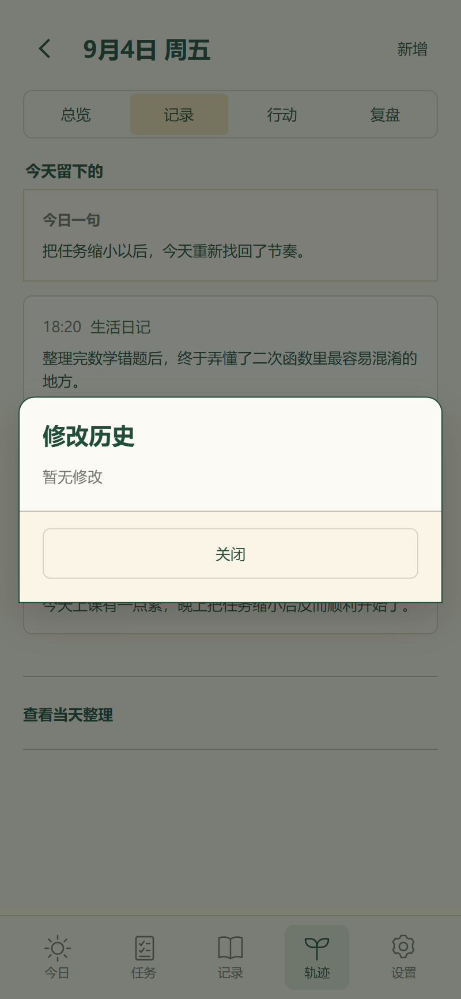

列表组件审计
当前代码：1 个共享底座（ui-list-row / ui-list-group），6 类可见变体。截图来自当前应用最近一次完整页面采集。
统一：共用行高、字体、内边距、分隔线变体：只因交互目的不同待收敛：仍有页面私有结构







当前代码：1 个共享底座（ui-list-row / ui-list-group），6 类可见变体。截图来自当前应用最近一次完整页面采集。






